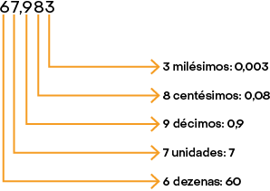
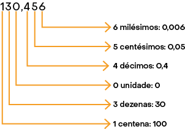

Página LXXXVI
c) De acordo com as informações do mapa, além de habitação e lazer, o território é usado para agricultura, extrativismo e pesca.
d) A escala indica que foi feita uma redução em relação ao espaço original representado.
e) Resposta pessoal. Espera-se que os estudantes representem a região usando seus conhecimentos, a capacidade de indicar referenciais e a criatividade.
Um pouco mais
1. a) As vagas ocupadas nesse estacionamento são A3, A4, A10, B3, B12, C6, C8, C13, D2, D9 e D15.
b) A cor do carro que ocupa a vaga A4 é azul.
c) A vaga ocupada pelo carro verde é a C6.
2. As coordenadas dos demais vértices desse hexágono são , , , e .
3. a) A imagem III é uma redução da imagem I.
b) A imagem I é uma ampliação da imagem III.
c) A imagem II não é uma redução ou ampliação da imagem I, pois foi obtida reduzindo apenas a medida da largura da imagem I.
4. a) As coordenadas dos vértices do quadrado:
ABCD são , , e .
EFGH são , , e .
IJKL são , , e .
b) O quadrado IJKL é uma redução do quadrado ABCD.
5. O retângulo IJKL é uma ampliação do retângulo ABCD na razão , pois as medidas de comprimento dos lados do retângulo foram ampliadas em 4 unidades.
6. a) Além da coordenada , que corresponde ao vértice A, as coordenadas do retângulo EFGH são , e .
b) Resposta pessoal. Sugestão de questão:
Um retângulo com vértices , , e é uma redução do retângulo ABCD?
Resposta: Não.
Encerrando a unidade
1. Os conteúdos abordados nesta unidade foram localização e pares ordenados.
2. Resposta pessoal. Espera-se que os estudantes respondam que o uso de códigos, em geral, facilita e deixa mais precisa a localização.
3. Resposta pessoal. Possíveis respostas: Poltronas em cinemas, assentos em ônibus e cadeiras em estádios.
4. Não; Espera-se que os estudantes respondam que o par ordenado indica 1 unidade à direita do zero no eixo horizontal e 3 unidades acima do zero no eixo vertical, e o par ordenado indica 3 unidades à direita do zero no eixo horizontal e 1 unidade acima do zero no eixo vertical.
Unidade 10 Números na forma decimal
1. De acordo com as cores indicadas, verificamos as seguintes frações e números na forma decimal correspondentes a cada parte das figuras:
a) verde: e 0,3; azul: e 0,1; amarelo: e 0,2; branco: e 0,4
b) verde: e 0,16; azul: e 0,24; amarelo: e 0,32; branco: e 0,28
c) verde: e 0,07; azul: e 0,13; amarelo: e 0,31; branco: e 0,49
2. Possíveis respostas:
A: novecentos e quinze vírgula três ou novecentos e quinze inteiros e três décimos.
B: oitenta vírgula vinte e quatro ou oitenta inteiros e vinte e quatro centésimos.
C: sete vírgula quatrocentos e cinco ou sete inteiros e quatrocentos e cinco milésimos.
D: trinta e cinco vírgula oitenta e dois ou trinta e cinco inteiros e oitenta e dois centésimos.
E: zero vírgula zero sessenta e seis ou sessenta e seis milésimos.
3. a) urubu-rei: ; anhuma: ; pelicano-pardo: ; albatroz-de-nariz-amarelo:
b) A ave de maior envergadura é o pelicano-pardo. A ave de menor envergadura é a anhuma.
c) A: 1,7; B: 1,8; C: 1,9; D: 2,2
4. Na resolução desta atividade, é necessário o reconhecimento de frações decimais e sua representação por meio de números decimais. Dos itens apresentados, aqueles que apresentam frações decimais são os itens b, d e e.
No item a, temos o número na forma decimal 0,1.
No item b, temos a fração decimal , que pode ser representada pelo número na forma decimal 0,9.
No item c, temos o número na forma decimal 3,6.
No item d, temos a fração decimal , que pode ser representada pelo número na forma decimal 0,54.
No item e, temos a fração decimal , que pode ser representada pelo número na forma decimal 0,005.
5. a)
b)
c)
6. a) 2 tem valor relativo 20; 8 tem valor relativo 8; 3 tem valor relativo 0,3; 7 tem valor relativo 0,07; 5 tem valor relativo 0,005.
b) O algarismo 6 tem valor relativo 0,06 no número 0,16.
7. a) Um inteiro e duzentos e cinquenta e três milésimos; um vírgula duzentos e cinquenta e três.
b) Noventa e seis centésimos; zero vírgula noventa e seis.
Página LXXXVII
c) Cem inteiros e dois décimos; cem vírgula dois.
d) Seis inteiros e noventa e três milésimos; seis vírgula zero noventa e três.
8. a)
b)
c) 
d) 
9. Escrevendo uma fração decimal e o número na forma decimal correspondente às quantias, temos:
a) ; 0,60
b) ; 0,77
c) ; 0,69
d) ; 1,40
10. Apresentamos a seguir uma fração decimal correspondente a cada número e sua forma irredutível para cada item.
a) ;
b) ;
c) ;
d) ;
e) ;
11. Apresentamos a seguir um número na forma decimal e uma fração decimal equivalente a cada número indicado para cada item.
A) 0,43;
B) 6,35;
C) 0,798;
D) 2,081;
Relacionando os números com os pontos indicados na reta numérica, temos A-I; B-III; C-IV; D-II.
12. I)
Então, e .
II)
Então, e .
III)
Então, e .
IV)
Então, e .
13. a) O recipiente foi dividido em 10 partes iguais e a quantidade de líquido contida em seu interior ocupa 8 dessas partes. Assim, a fração que representa a quantidade de líquido desse recipiente é , que pode ser representada pelo número decimal .
b) O recipiente foi dividido em 4 partes iguais e a quantidade de líquido contida em seu interior ocupa 1 dessas partes. Assim, a fração que representa a quantidade de líquido desse recipiente é , que pode ser representada pelo número decimal .
c) O recipiente foi dividido em 5 partes iguais e a quantidade de líquido contida em seu interior ocupa 3 dessas partes. Assim, a fração que representa a quantidade de líquido desse recipiente é , que pode ser representada pelo número decimal .
14. Para a resolução desta atividade, é necessário reconhecer que o valor do número decimal não é alterado quando acrescentamos zeros à sua direita. Sendo assim, o número 7, indicado no item a equivale ao número 7,000, apresentado no item IV. Do mesmo modo, o número 0,7, do item b, pode ser representado pelo número 0,700, apresentado no item II. O número 0,07, do item c, equivale ao número 0,070 do item I. E, por fim, o número decimal 0,007, apresentado no item d, pode ser associado ao número 0,0070, representado no item III.
Portanto, a associação correta é a-IV, b-II, c-I, d-III.
15. a) Multiplicando numerador e denominador da fração por 25, temos:
Portanto, uma fração decimal equivalente a é . Essa fração pode ser representada pelo número decimal 1,25 (um inteiro e vinte e cinco centésimos).
Página LXXXVIII
b) Multiplicando numerador e denominador da fração por 5, temos:
Portanto, é uma fração decimal equivalente a . Essa fração pode ser representada pelo número decimal 0,7 (sete décimos).
c) Multiplicando o numerador e o denominador da fração por 2, temos:
Portanto, é uma fração decimal equivalente a . Essa fração pode ser representada pelo número decimal 0,36 (trinta e seis centésimos).
d) Multiplicando o numerador e o denominador da fração por 2, temos:
Portanto, é uma fração decimal equivalente a . Essa fração pode ser representada pelo número decimal 2,6 (dois inteiros e seis décimos).
Representando os números decimais obtidos nos itens a até d na reta numérica, temos:
Resolução no final da seção Resoluções.
16. a) No ano de 2018, cada brasileiro consumiu, em média, de café torrado.
b) O ano em que houve o maior consumo per capita de café torrado no Brasil foi 2017. O menor consumo ocorreu em 2019.
17. Substituindo cada pelo símbolo > ou < adequadamente, obtemos:
a)
b)
c)
d)
e)
f)
18. Resposta pessoal. Possível resposta:
a) 3,2; 3,5; 3,9
b) 0,61; 0,65; 0,68
c) 2,033; 2,036; 2,039
d) 5,130; 5,131; 5,132
e) 6,511; 6,515; 6,518
f) 8,1; 8,12; 8,13
19. a) O menor número possível de ser obtido com os algarismos das fichas é 0,257.
b) Possíveis respostas:
205,7; 207,5; 250,7; 257,0; 270,5; 275,0; 502,7; 507,2; 520,7; 527,0; 570,2; 572,0; 702,5; 705,2; 720,5; 725,0; 750,2; 752,0
c) Um número entre 5,711 e 5,837 possível de ser obtido com os algarismos das fichas é 5,720.
20. A parte inteira dos números é igual (5). Portanto, devemos comparar os décimos. Desse modo, como , verificamos que .
A parte inteira e os décimos dos números são iguais (5,9). Portanto, devemos comparar os centésimos. Desse modo, como , verificamos que .
A parte inteira dos números é igual. Para descobrir o valor da letra C, devemos comparar os milésimos desses três números. Sendo assim, como , verificamos que .
A letra D só pode ser preenchida com o algarismo 9, pois qualquer outro algarismo tornaria a desigualdade inválida. Desse modo, .
Portanto, , , e .
21. a) Resposta pessoal. Espera-se que os estudantes respondam que sim, pois, além de garantir diversos direitos, a emissão da nota fiscal possibilita a arrecadação de tributos.
b) O maior preço apresentado é R$ 19,99. O menor preço apresentado é R$ 7,49.
c) O produto que custa mais que R$ 16,50 e menos que R$ 17,00 é o amaciante Limpe.
d) Com o valor aproximado cobrado pelos tributos seria possível comprar um biscoito de chocolate, iogurte Sabor ou pão de forma Boa Saúde.
e) Resposta pessoal. Espera-se que os estudantes elaborem questões relacionadas ao conteúdo estudado e ao assunto abordado na atividade, explorando a criatividade e o senso crítico.
22. a) Efetuando o cálculo por meio de frações decimais, temos:
Portanto, um sanduíche de atum e uma vitamina custam juntos R$ 18,30.
b) O sanduíche mais barato custa R$ 8,60 e a bebida mais barata custa R$ 6,35. Efetuando a adição por meio do algoritmo, temos:
Portanto, a menor quantia que uma pessoa pode gastar comprando um sanduíche e uma bebida é R$ 14,95.
c) O preço a ser pago pelo sanduíche de peito de peru e pelo suco é dado por:
Como a pessoa pagou a despesa com uma cédula de R$ 20,00, o valor do troco é determinado por:
Portanto, ela recebeu R$ 3,15 de troco.
Página LXXXIX
23. Efetuando os cálculos, obtemos:
a)
b)
c)
d)
24. a) •
A diferença de tempo entre Carl Lewis e Donovan Bailey foi .
A diferença de tempo entre Donovan Bailey e Usain Bolt foi .
b)
O recorde desde Carl Lewis, em 1988, até Usain Bolt, em 2012, diminuiu .
25. Devemos adicionar as medidas de comprimento dos lados de cada polígono para obter a respectiva medida do perímetro. Sendo assim, vamos obter essas somas, considerando P a medida do perímetro.
a)
Portanto, o perímetro do polígono mede .
b)
Portanto, o perímetro do polígono mede .
26. a)
Pedro recebeu R$ 12,64 de troco.
b)
Joana mede de altura.
c) Sabendo que Tiago possui R$ 36,40, efetuamos uma subtração de R$ 14,25 dessa quantia para determinar quanto Maria tem , ou seja, Maria tem R$ 22,15. Adicionando as duas quantias, obtemos . Portanto, os dois têm, juntos, R$ 58,55.
27. a) Para descobrir a regra dessa sequência, devemos subtrair dois termos consecutivos. Assim:
Como a sequência é crescente, devemos adicionar o valor obtido ao último número apresentado na sequência. Logo:
Repetindo esse procedimento quatro vezes e considerando que a regularidade seja mantida, obtemos os números solicitados.
Portanto, os próximos 5 números da sequência são:
20; 24,3; 28,6; 32,9; 37,2.
b) Para descobrir a regra dessa sequência, devemos subtrair dois termos consecutivos. Assim:
Como a sequência é decrescente, devemos subtrair o valor obtido do último número apresentado na sequência. Logo:
Repetindo esse procedimento quatro vezes e considerando que a regularidade seja mantida, obtemos os números solicitados.
Portanto, os próximos 5 números da sequência são:
18,10; 17,39; 16,68; 15,97; 15,26.
c) Para descobrir a regra dessa sequência, devemos subtrair dois termos consecutivos. Assim:
Como a sequência é crescente, devemos adicionar o valor obtido ao último número apresentado na sequência. Logo:
Repetindo esse procedimento quatro vezes e considerando que a regularidade seja mantida, obtemos os números solicitados.
Portanto, os próximos 5 números da sequência são:
15,996; 20,366; 24,736; 29,106; 33,476.
28. Efetuando os cálculos na calculadora, temos:
a)
b)
c)
d)
e)
f)
29. I)
A massa total da caixa B mede .
II)
A massa total da caixa C mede .
Página XC
III)
A massa total das caixas A e C juntas mede .
IV)
A massa total das caixas B e C juntas mede .
30. a) O país que tinha a maior expectativa de vida era o Japão. O país que tinha a menor expectativa de vida era Serra Leoa.
b)
-
Em 2019, a diferença da expectativa de vida entre islandeses e brasileiros era 7,1 anos.
-
Em 2019, a diferença da expectativa de vida entre japoneses e leoneses era 29,9 anos.
c)
Em 2019, a expectativa de vida no Chile era 80,2 anos.
31. Resposta pessoal. Sugestão de questões:
a) Qual recipiente tem a maior quantidade de líquido?
Resposta: O recipiente C tem a maior quantidade de líquido.
b) Se despejarmos no recipiente D o líquido contido nos recipientes A, B e C, esse conteúdo vai transbordar?
Resposta:
Resposta: Não.
32. I )
II)
33. a) Resposta pessoal. Espera-se que os estudantes respondam de acordo com a opção pessoal de estratégia mais conveniente.
b ) I) Arredondando o preço do caderno e da lapiseira à unidade de Real mais próxima, obtemos, respectivamente, os valores R$ 18,00 e R$ 10,00. Adicionando esses valores, obtemos . Portanto, Bruno vai gastar o valor aproximado de R$ 28,00 se comprar um caderno e uma lapiseira.
II) Arredondando o preço do estojo e da caixa de lápis de cor à unidade de Real mais próxima, obtemos, respectivamente, os valores R$ 12,00 e R$ 12,00. Adicionando esses valores, obtemos . Portanto, Bruno vai gastar o valor aproximado de R$ 24,00 se comprar um estojo e uma caixa de lápis de cor.
III) Arredondando o preço da lapiseira e da caixa de lápis de cor à unidade de Real mais próxima, obtemos, respectivamente, os valores R$ 10,00 e R$ 12,00. Adicionando esses valores, obtemos . Portanto, Bruno vai gastar o valor aproximado de R$ 22,00 se comprar uma lapiseira e uma caixa de lápis de cor.
IV) Arredondando o preço do caderno, do estojo e da lapiseira à unidade de Real mais próxima, obtemos, respectivamente, os valores R$ 18,00, R$ 12,00 e R$ 10,00. Adicionando esses valores, temos: . Portanto, Bruno vai gastar o valor aproximado de R$ 40,00 se comprar um caderno, um estojo e uma lapiseira.
c ) I)
Bruno vai gastar exatamente R$ 28,14 na compra de um caderno e uma lapiseira.
II)
Bruno vai gastar exatamente R$ 24,04 na compra de um estojo e uma caixa de lápis de cor.
III)
Bruno vai gastar exatamente R$ 22,16 na compra de uma lapiseira e uma caixa de lápis de cor.
IV)
Bruno vai gastar exatamente R$ 39,81 na compra de um caderno, um estojo e uma lapiseira.
d) Resposta pessoal. Possível resposta:
É útil realizar cálculos mentais aproximados quando precisamos decidir algo de maneira prática, como a medida de um móvel ou objeto e a medida de massa ou capacidade.
34. Realizando a conversão, obtemos:
a) , pois .
b) , pois .
c) , pois .
d) , pois .
35. Efetuando os cálculos, obtemos:
a)
b)
c)
d)
e)
f)
36. a)
Uma caixa de canetas esferográficas custa R$ 79,00.
b)
Uma caixa de calculadoras custa R$ 99,00.
37. a)
-
Uma pessoa pagaria R$ 9,00 na impressão de 10 fotografias.
-
Uma pessoa pagaria R$ 83,00 na impressão de 100 fotografias.
b) Mônica pagou R$ 18,00 pela impressão das 20 fotografias, pois . Como ela pagou a compra com uma cédula de R$ 50,00, o troco recebido é dado por . Portanto, Mônica recebeu R$ 32,00 de troco.
38. Efetuando os cálculos, obtemos:
a)
b)
c)
d)
e)
f)
Página XCI
39.
A distância entre 2 postes consecutivos será .
40. a)
Cada coco que Antônio comprou custou R$ 2,25.
b)
O lucro que Antônio obteve ao vender cada coco foi R$ 4,25.
41.
42. A operação apresentada no item a representa uma divisão por 100. Nesse caso, o quociente é obtido ao deslocarmos a vírgula do dividendo 2 casas para a esquerda, ou seja, 9,65. Esse mesmo resultado é obtido ao dividirmos , cuja operação está indicada no item III. Seguindo o mesmo raciocínio, o produto de , do item b, é obtido ao deslocarmos a vírgula 1 casa para a direita, resultando em 96,5, que é o mesmo resultado obtido ao dividirmos , cuja operação está indicada no item II. O produto de , do item c, é 965, que corresponde ao resultado de , do item IV. Por fim, o resultado de , do item d, é 0,965, que é igual ao quociente de , do item I. Portanto, a-III, b-II, c-IV, d-I.
43. Sendo P a medida do perímetro, temos:
a)
Portanto, o perímetro do quadrado mede .
b)
Portanto, o perímetro do triângulo mede .
c)
Portanto, o perímetro do hexágono mede .
44. De acordo com a imagem, verificamos que Carlos coloca, diariamente, a quantia de R$ 1,25 no cofrinho.
a) Como uma semana tem 7 dias, Carlos terá .
Portanto, após uma semana, Carlos terá R$ 8,75 no cofrinho.
b) Considerando um mês com 30 dias, Carlos terá .
Portanto, após um mês, Carlos terá R$ 37,50 no cofrinho.
c) Considerando um bimestre (dois meses) com 60 dias, Carlos terá ou .
Portanto, após um bimestre, Carlos terá R$ 75,00 no cofrinho.
d) Considerando um ano com 365 dias, Carlos terá .
Portanto, após um ano, Carlos terá R$ 456,25 no cofrinho.
45. Efetuando os cálculos na calculadora, obtemos:
a)
b)
c)
d)
e)
f)
46. Resolvendo os itens, obtemos:
a)
b)
c)
d)
47. a) A medida da distância percorrida em cada volta é maior no circuito de Interlagos, em São Paulo. A medida da distância percorrida em cada volta é menor no circuito do Autódromo Internacional Zilmar Beux, em Cascavel, no Paraná.
b) • Interlagos (SP):
Portanto, um carro da Stock Car que completou a corrida percorreu no Autódromo de Interlagos.
Cascavel (PR):
Portanto, um carro da Stock Car que completou a corrida percorreu no Autódromo Internacional Zilmar Beux, em Cascavel.
Santa Cruz do Sul (RS):
Portanto, um carro da Stock Car que completou a corrida percorreu no Autódromo Internacional de Santa Cruz.
48. Resolvendo as expressões, obtemos:
a)
b)
c)
d)
49. a) Sim.
b) A expressão que corresponde ao troco recebido por Daniele é a representada no item III. Resolvendo essa expressão, temos:
Portanto, Daniele recebeu R$ 10,13 de troco.
50. a) Cálculo aproximado: ;
cálculo exato: .
b) Cálculo aproximado: ;
cálculo exato: .
c) Cálculo aproximado: ;
cálculo exato: .
d) Cálculo aproximado: ;
cálculo exato: .
Página XCII
51. Efetuando os cálculos, obtemos:
a)
b)
c)
d)
52. a) •
Marta pagou R$ 15,00 pelo arroz.
Marta pagou R$ 19,36 pelo feijão.
Marta pagou R$ 18,91 pelo tomate.
b)
Marta gastou R$ 53,27 no total.
53. Resposta pessoal. Sugestão de questões:
a) Qual foi o total da despesa de Marcelo com combustível?
Resposta: R$ 155,52.
b) Qual foi o total da despesa de Marcelo com pedágio?
Resposta: R$ 19,16.
54.
a)
b)
c)
d)
55. De acordo com a estratégia de cálculo apresentada na atividade, é provável que os estudantes procedam da maneira apresentada a seguir.
a)
b)
c)
d)
e)
f)
56. a) Cálculo aproximado: ;
cálculo exato: .
b) Cálculo aproximado: ;
cálculo exato: .
c) Cálculo aproximado: ;
cálculo exato: .
d) Cálculo aproximado: ;
cálculo exato: .
e) Cálculo aproximado: ;
cálculo exato: .
f) Cálculo aproximado: ;
cálculo exato: .
57. a)
b)
c)
d)
e)
f)
58. a)
A medida da massa de alumínio recolhida nessa semana foi .
b) Adicionando todas as quantidades e dividindo pela quantidade de dias considerados, obtemos:
Em média, a medida da massa de alumínio recolhido diariamente nessa semana é .
c) segunda-feira:
terça-feira:
quarta-feira:
quinta-feira:
sexta-feira:
sábado:
Portanto, os dias dessa semana em que foram recolhidas quantidades de alumínio maiores do que a média são terça-feira, quarta-feira, quinta-feira e sexta-feira.
59. Sendo P a medida do perímetro, efetuamos os cálculos a seguir.
a)
A medida do comprimento de cada lado do polígono é .
b)
A medida do comprimento de cada lado do polígono é .
60. a) A maior parte de chocolate será obtida na barra III.
Página XCIII
b ) I)
Cada parte da barra de chocolate I tem .
II)
Cada parte da barra de chocolate II tem .
III)
Cada parte da barra de chocolate III tem .
c) Possíveis respostas:
Cada uma das 8 partes da barra II tem . Assim, para dividi-la em 3 pedaços desiguais, podemos considerar dois pedaços com 2 partes e um pedaço com 4 partes. No caso dos pedaços com 2 partes, a medida de suas massas seria , ou seja, . Já no caso do pedaço com 4 partes, a medida de sua massa seria , ou seja, .
Cada uma das 5 partes da barra III tem . Assim, para dividi-la em 2 pedaços desiguais, podemos considerar um pedaço com 2 partes e um pedaço com 3 partes. No caso do pedaço com 2 partes, a medida de sua massa seria , ou seja, . Já no caso do pedaço com 3 partes, a medida de sua massa seria , ou seja, .
61. Resposta pessoal. Sugestão de perguntas:
a) Qual foi a quantia que Denise pagou pelo quilograma da costela?
Resposta: R$ 37,90.
b) Quanto Denise pagaria caso comprasse apenas de costela?
Resposta: R$ 18,95.
62. a) ; período: 6
b) ; período: 18
c) ; período: 2
d) ; período: 6
63. a) Não, pois 10 dividido por 3 resulta em uma dízima períodica, ou seja,
b) Resposta pessoal. Possível resposta:
Um deles poderia se oferecer para pagar R$ 0,01 a mais do que os outros.
64. Arredondando para o centésimo mais próximo, obtemos:
a) ; 0,83
b) ; 20,33
c) ; 0,09
d) ; 1,30
e) ; 5,94
f) ; 11,08
65. a) • Máquina A:
A máquina A produziu, em média, 12,6 peças por minuto.
Máquina B:
A máquina B produziu, em média, 11,9 peças por minuto.
Máquina C:
A máquina C produziu, em média, 12,65 peças por minuto.
b) A máquina C produziu, em média, mais peças por minuto.
c) • Máquina A:
A máquina A vai produzir 756 peças em 1 hora de funcionamento.
Máquina B:
A máquina B vai produzir 714 peças em 1 hora de funcionamento.
Máquina C:
A máquina C vai produzir 759 peças em 1 hora de funcionamento.
66. a)
b)
c)
d)
e)
f)

67. a) Cartão de crédito: .
Boleto bancário: .
Se um cliente pagar a assinatura com o cartão de crédito, o valor da parcela será R$ 26,04. Se ele pagar no boleto bancário, será R$ 34,72.
b)
O preço médio de cada revista é R$ 17,36.
Página XCIV
68. a) A maior nota que Jean obteve foi 10. Essa nota foi obtida em História, no 1º bimestre.
b) •
A nota anual que Jean obteve em Matemática foi 7,3.
A nota anual que Jean obteve em Ciências foi 8,1.
A nota anual que Jean obteve em História foi 7,2.
69. a)
Nesse posto, cada litro de gasolina custa R$ 6,51.
b) Primeira parte da viagem: . Segunda parte da viagem:
.
Na primeira parte da viagem, Marilda gastou R$ 52,08 em combustível. Na segunda parte, gastou R$ 156,24 em combustível.
70. a)
b)
c)
d)
e)
f)
71. a) medida da altura:
medida da largura:
Portanto, a medida da altura e a medida da largura de cada degrau equivalem a e , respectivamente.
b)
Uma pessoa parada no 9º degrau está a de altura.
72. De acordo com a estratégia de cálculo apresentada na atividade, é provável que os estudantes efetuem os cálculos conforme indicado a seguir.
a)
b)
c)
d)
e)
f)
73. Calculando as potências, temos:
a)
b)
c)
d)
74. Talita: ; Pedro:
75. Escrevendo uma potência correspondente e resolvendo-a, temos:
a)
b)
c)
d)
76. Resposta pessoal. Sugestão de problema:
A sala da casa de João tem formato quadrado com de medida de lado. Qual é a medida da área dessa sala?
Resposta: .
77. a-II;
b-IV;
c-I;
d-III;
78. Utilizando uma calculadora, temos:
a)
b)
c)
d)
79. Sendo A a medida da área de cada quadrado, temos:
a)
Portanto, a medida da área do quadrado é .
b)
Portanto, a medida da área do quadrado é .
c)
Portanto, a medida da área do quadrado é .
80. Escrevendo na forma decimal, temos:
a)
b)
c)
d)
e)
f)
81. Representando como porcentagem, temos:
a)
b)
c)
d)
e)
f)
82. a)
Portanto, 36% de equivalem a .
b)
Portanto, 60% de equivalem a .
c)
Portanto, 48% de equivalem a .
Página XCV
Em ação
Em ação com a cidadania
1. Resposta pessoal. Espera-se que os estudantes deem suas respostas com base em suas vivências pessoais. Nesse caso, incentive-os a citar bons adjetivos qualificando as ações da pessoa mencionada.
2. Resposta pessoal. Espera-se que os estudantes respondam que sim, pois homens e mulheres merecem os mesmos direitos e obrigações. Portanto, a mulher pode ocupar os mesmos lugares que o homem na sociedade.
3. Resposta pessoal. Espera-se que os estudantes respondam que sim, pois a inserção da mulher no mercado de trabalho fornece a ela condições de sustentar um lar.
Em ação com a Matemática
4. Efetuando uma subtração com as informações percentuais apresentadas no gráfico, obtemos .
Portanto, no período de 1995 a 2019, o percentual de domicílios brasileiros chefiados por mulheres aumentou de 23% para 48%, ou seja, houve um aumento de 25%.
5. Domicílios chefiados por mulheres:
Domicílios chefiados por homens:
Portanto, em 2019, aproximadamente 34.749.600 domicílios brasileiros eram chefiados por mulheres, enquanto aproximadamente 37.645.400 eram chefiados por homens.
83. Resposta pessoal. Sugestão de pergunta:
Qual é a quantia, em reais, que o 1º colocado desse concurso vai ganhar?
Resposta: O 1º colocado desse concurso vai ganhar R$ 1.500,00.
84. Selos internacionais:
Selos internacionais inéditos:
Portanto, nessa coleção há 98 selos internacionais inéditos.
85. a)
Portanto, Milena pagou R$ 269,80 pelo produto.
b) Resposta pessoal. Possível resposta:
É melhor pagar o produto à vista, caso haja dinheiro disponível.
86. Calculando mentalmente, devemos obter:
a)
b)
c)
d)
87. Medida da massa do hipopótamo fêmea na fase adulta:
Medida da massa do filhote ao nascer:
Portanto, a massa de um filhote de hipopótamo ao nascer mede aproximadamamente .
Um pouco mais
1. a) oitocentos e vinte e três milésimos
b) um inteiro e quarenta e cinco milésimos
2. Possíveis respostas:
a) ; 0,5
b) ; 0,55
c) ; 0,18
3. Efetuando os cálculos, temos:
a)
b)
c)
d)
4. O número correspondente a cada letra é:
Portanto, A: 17,15; B: 11,01; C: 24,25; D: 11,94.
5. Efetuando os cálculos, obtemos:
a)
b)
c)
d)
e)
f)
Página XCVI
6. Resolvendo os itens, temos:
a)
b)
c)
d)
e)
f)
7. Efetuando os cálculos, obtemos:
a)
b)
c)
d)
e)
f)
8. Escrevendo em forma de potência e resolvendo-as, temos:
a)
b)
c)
d)
Encerrando a unidade
1. Os conteúdos abordados nesta unidade foram números na forma decimal e operações com números na forma decimal.
2. Resposta pessoal. Algumas sugestões de resposta são:
Medidas de comprimento, preços de produtos, medidas de capacidade, entre outras situações.
3. Resposta pessoal. Espera-se que os estudantes respondam que podemos dividir o numerador da fração pelo denominador.
4. Possível resposta: Inicialmente, comparamos as partes inteiras. Caso sejam iguais, comparamos os décimos. Em seguida, os centésimos, e assim por diante.
5. Resposta pessoal. Possível resposta:
6. Resposta pessoal. Espera-se que os estudantes respondam que desconsideramos a vírgula dos fatores e efetuamos o cálculo. Depois, acrescentamos a vírgula ao resultado de maneira que a quantidade de casas decimais seja igual à soma das quantidades de casas decimais dos fatores.
7. Possível resposta: Na multiplicação por 10, deslocamos a vírgula uma casa decimal para a direita; por 100, duas casas decimais para a direita; por 1.000, decimais para a direita, e assim por diante. A divisão por 10, 100 e 1.000 ocorre de maneira parecida, deslocando a vírgula para a esquerda.
Unidade 11 Medidas
1. a) Espera-se que os estudantes respondam que as quantidades não são iguais, pois as medidas dos palmos de ambos são diferentes.
b) Resposta pessoal. Espera-se que os estudantes respondam que não é conveniente usar partes do corpo como unidades de medida, pois podem ser obtidas medidas diferentes para um mesmo comprimento.
2. Considerando o segmento azul como unidade de medida, obtemos:
; ;
3. A unidade de medida mais indicada para determinar:
a) a medida da altura de um prédio é o metro, apresentada no item II como .
b) a medida do comprimento de um lápis é o centímetro, apresentada no item IV como .
c) a medida da espessura de uma agulha é o milímetro, apresentada no item I como .
d) a medida da distância entre duas cidades é o quilômetro, apresentada no item III como .
Portanto, a-II, b-IV, c-I, d-III.
4. a) O pico mais elevado do Brasil é o Pico da Neblina, com de medida de altitude, de acordo com a medição mais atualizada.
b) De acordo com a nova medição, os picos um pouco menos elevados do que se imaginava são o Pico da Bandeira e Pico da Pedra da Mina. Já os picos um pouco mais elevados do que se imaginava são o Pico 31 de Março e o Pico da Neblina.
5. Esta atividade admite várias respostas. Apresentamos algumas delas em cada item.
a) Régua, trena, fita métrica ou metro articulado.
b) Régua, trena ou fita métrica.
c) Paquímetro ou micrômetro.
d) Trena ou metro articulado.
e) Fita métrica.
f) Paquímetro ou micrômetro.
6. Resposta pessoal. Sugestão de problema:
Durante um treino de um time de futebol, o treinador pediu aos jogadores que corressem 2 voltas completas ao redor do campo. Qual foi a medida da distância percorrida pelos jogadores, em quilômetro, após as 2 voltas?
Resposta: A medida da distância percorrida pelos jogadores, em metros, é dada por:
Transformando essa medida em quilômetros, obtemos:
Portanto, a medida da distância percorrida pelos jogadores após as 2 voltas foi .
Página XCVII
7. Substituindo cada pelo número adequado, temos:
a)
b)
c)
d)
e)
f)
8. A medida da extensão da fila de caminhões, em metro, é dada por:
Se a medida do comprimento de cada caminhão é, aproximadamente, , então a quantidade de caminhões é:
Portanto, há aproximadamente 840 caminhões na fila.
9. Resposta pessoal. Espera-se que os estudantes compartilhem entre si os procedimentos utilizados.
10. Com base na planta baixa da residência, concluímos o que segue.
a) Nessa residência há 6 portas.
b) 2 portas dessa residência dão acesso à área externa da casa, sendo uma delas na sala de estar e outra na área de serviço.
c) A medida da largura do banheiro é , enquanto a medida do comprimento é .
11. Resposta pessoal. A resposta depende das dimensões do cômodo que o estudante escolheu para representar.
12. A imprecisão das réguas e das aferições dos estudantes pode interferir nas respostas desta atividade. Portanto, considere os arredondamentos aos centésimos que eles fizerem.
a) Com uma régua, verificamos na imagem que o comprimento do local destinado à vaga comum mede, aproximadamente, , e a largura mede, aproximadamente, . Multiplicando essas medidas pelo valor , obtemos:
medida do comprimento real aproximado:
medida da largura real aproximada:
Portanto, o comprimento da vaga comum de estacionamento mede, aproximadamente, , enquanto a largura mede, aproximadamente, .
b) Sim, as vagas reservadas a pessoas com deficiência têm dimensões diferentes das vagas comuns. Na imagem, a largura de uma dessas vagas está representada com a medida aproximada de . Assim:
Logo, a medida da largura real de uma vaga destinada a pessoas com deficiência é, aproximadamente, . Assim, a diferença entre a medida da largura dessas vagas é dada por , ou seja, .
Portanto, as vagas destinadas a pessoas com deficiência medem, aproximadamente, a mais em seu comprimento quando comparadas às vagas comuns.
13. a) Resposta pessoal. Espera-se que os estudantes façam a descrição com base em suas observações pessoais.
b) Resposta pessoal. Espera-se que os estudantes usem suas percepções pessoais e sua capacidade de abstração para descrever com o máximo de detalhes possível o lugar onde moram.
14. A medida mais adequada para expressar a massa de:
a) um componente de cada comprimido de um remédio é o miligrama.
b) um caminhão carregado é a tonelada.
c) um cavalo é o quilograma.
d) um tablete de chocolate é o grama.
15. Escrevendo cada um dos itens usando o grama como unidade de medida, temos:
a)
b)
c)
d)
16. Efetuando uma subtração com as medidas informadas, verificamos que:
Nos 10 meses de tratamento, Felipe ganhou de massa. Esse valor, em grama, é dado por:
Assim, para calcular a medida da massa que Felipe ganhou em cada mês, fazemos:
Portanto, Felipe ganhou, em média, de massa por mês durante seu tratamento.
17. A produção diária de doce de leite dessa cooperativa é dada, em grama, por:
Se cada pote tem capacidade para armazenar de doce de leite, então:
Portanto, são produzidos diariamente, aproximadamente, 336 potes de doce de leite.
18. a) Esse item admite várias respostas. Apresentamos uma delas:
Vatapá, bobó de camarão, caruru (o quiabo, com o qual se faz o caruru, foi trazido da África).
Página XCVIII
b) •
Nessa receita, são necessários, em média, de feijão-fradinho no preparo de cada acarajé.
São necessários, aproximadamente, de feijão-fradinho no preparo de 40 acarajés. Essa medida, em quilograma, é igual a:
Portanto, são necessários de feijão-fradinho para que Regina prepare 40 acarajés.
Regina vai arrecadar R$ 682,50 com a venda de 65 acarajés.
19. Escrevendo em quilogramas as medidas indicadas, temos:
a)
b)
c)
d)
e)
f)
20. Descontando a massa do estrado da capacidade máxima de carregamento da empilhadeira, temos:
Assim, a medida da massa das caixas a serem transportadas poderá ser, no máximo, igual a . Logo, a quantidade de caixas é dada por:
Portanto, a empilhadeira poderá transportar até 25 caixas como essa de cada vez.
21. Substituindo cada pelo número adequado, temos:
a)
b)
c)
d)
e)
f)
22. a) O comprimido da caixa 1 tem da principal substância do medicamento. O comprimido da caixa 2 tem da principal substância do medicamento.
b) Como a caixa 1 tem 30 comprimidos, temos:
Ao final do tratamento, após ter tomado todos os comprimidos da caixa 1, uma pessoa terá ingerido da principal substância do medicamento.
c) Sabemos que desse medicamento equivalem a . Se cada comprimido tem , então:
Logo, uma pessoa deve tomar 15 comprimidos da caixa 2 para ingerir da principal substância do medicamento.
23. Resposta pessoal. Sugestão de questões:
Dos mamíferos apresentados, quais têm a medida da massa maior do que ?
Resposta: Efetuando a conversão das unidades de medida, temos:
elefante africano:
girafa:
hipopótamo:
rinoceronte-negro:
Portanto, dos mamíferos apresentados, o hipopótamo e o elefante africano têm medida da massa maior do que .
As medidas das massas de uma girafa e de um rinoceronte-negro, juntas, é maior ou menor do que a medida da massa de um hipopótamo?
Resposta:
Como é maior do que , as medidas das massas de uma girafa e de um rinoceronte-negro, juntas, é maior do que a medida da massa de um hipopótamo.
A medida da massa de um elefante africano é maior ou menor do que as medidas das massas de uma girafa, um hipopótamo e um rinoceronte-negro, juntas?
Resposta:
Como é menor do que , a medida da massa de um elefante africano é menor do que as medidas das massas de uma girafa, um hipopótamo e um rinoceronte-negro, juntas.
24. De acordo com as informações, as caixas A e D contêm bijuterias ou bombons. Além disso, a caixa de bombons é mais leve do que a caixa de bijuterias. Logo, analisando as medidas das massas indicadas nas balanças das caixas A e D, concluímos que a caixa D contém bombons e a caixa A, bijuterias. Além disso, a afirmação diz que a medida da massa da caixa de parafusos é maior do que a medida da massa da caixa de moedas. Analisando as medidas das massas indicadas nas balanças das caixas B e C, concluímos que a caixa B contém parafusos e a caixa C, moedas.
Portanto, de acordo com as informações:
a) As bijuterias estão na caixa A.
b) Os bombons estão na caixa D.
c) As moedas estão na caixa C.
d) Os parafusos estão na caixa B.
25. O relógio do item a está marcando , que é o mesmo horário indicado no relógio digital do item IV. O relógio do item b está marcando ou, ainda, , que é o mesmo horário indicado no relógio digital do item III. O relógio do item c está marcando ou, ainda, , que é o mesmo horário indicado no relógio digital do item I. O relógio do item d está marcando ou , que é o mesmo horário indicado no relógio digital do item II.
Portanto, a-IV, b-III, c-I, d-II.
Página XCIX
26. a) O relógio do item III marca o mesmo horário em que o filhote eclodiu, ou seja, .
b) O fato que ocorreu à da tarde foi que o filhote aumentou a fenda na casca do ovo.
c) O filhote conseguiu sair 33 minutos após a eclosão.
27. a) A máquina regulada produz 5 peças a cada . Logo:
Assim, .
Portanto, em a máquina regulada produz 15 peças.
Assim, .
Portanto, em a máquina regulada produz 900 peças.
Assim, .
Portanto, em a máquina regulada produz 2.925 peças.
b) A máquina desregulada produz 5 peças a cada . Logo:
Assim, .
Portanto, em a máquina desregulada produz 100 peças.
c) máquina regulada: ;
máquina desregulada: ;
Efetuando a subtração dos valores obtidos, temos:
Portanto, em de funcionamento, a máquina regulada produz 1.200 peças a mais que a máquina desregulada.
28. a) I: ; II: ; III:
b) Analisando o horário dos relógios dos itens I e II , obtemos a seguinte subtração:
O ônibus parte do terminal central a cada 135 minutos.
c) Para determinar o horário indicado no relógio IV, devemos adicionar ao horário indicado no relógio III. Assim:
Do mesmo modo, devemos adicionar ao horário indicado no relógio IV. Logo:
Portanto, mantendo a sequência de horários de partida, o horário indicado no relógio IV deve ser e o horário indicado no relógio V deve ser .
29. a) Os atletas quenianos eram:
Kimani Pharis Irungu, que concluiu a prova em ;
David Kiprono Metto, que concluiu a prova em ;
Kiplimo Stephen, que concluiu a prova em .
b) Como a duração da prova do 3º e 4º colocados foi igual nos qu'esitos horas e minutos, devemos analisar a diferença nos segundos. Assim:
Portanto, o 4º colocado chegou após Feleke.
c) O 5º colocado chegou após o 1º colocado. Assim:
Portanto, a prova desse atleta durou .
30. a) O fuso horário entre Recife e Madri é de .
b)
Quando for no Recife, será em Madri.
c)
Quando em Madri marcar , o horário em Recife será .
d) Resposta pessoal. Espera-se que os estudantes compartilhem entre si os procedimentos utilizados.
31. a)
Jorge percorreu, em média, a cada hora.
b) Efetuando a conversão, em metros, da medida aproximada da distância rodoviária entre Rio de Janeiro e São Paulo, temos:
Agora, efetuando a conversão em minutos do tempo que Jorge gastou para fazer essa viagem, temos:
Por fim, com os valores encontrados, calculamos:
Portanto, Jorge percorreu, em média, a cada minuto.
Página C
32. a) O documentário apresentou informações referentes ao período de 1900 a 1999, ou seja, 10 décadas. Sua duração foi representada por , ou seja:
Logo, .
Portanto, foram utilizados para expor cada década.
b) Os fatos sobre o regime militar ocorreram no ano de 1964, ou seja, no documentário foram apresentados no período de tempo referente a 7 décadas. Se a duração das informações referentes a cada uma das décadas foi de , então . Devemos efetuar a conversão desse valor em horas. Para isso:
Portanto, os fatos sobre o regime militar foram apresentados no documentário das às após o seu início. Esse período de tempo está indicado no item I.
Matemática em destaque
33. a) Possível resposta:
O tempo de pode ser dividido em 4 partes de , visto que e .
b)
Ele obteve 136 batimentos por minuto. Espera-se que os estudantes respondam ser provável que o adulto esteja em movimento, pois a quantidade de batimentos cardíacos obtida é maior do que a média de uma pessoa saudável em repouso, entre 60 e 100 batimentos.
c) Resposta pessoal. Espera-se que os estudantes comentem e compartilhem entre si as estratégias pessoais.
34. De acordo com o calendário de 2024, temos o que segue.
a) Dia 28 de novembro de 2024 corresponde a uma quinta-feira.
b) As terças-feiras do mês de abril são nos dias 2, 9, 16, 23 e 30.
c) O 4º bimestre é composto pelos meses de julho e agosto.
d) O 2º domingo de maio corresponde ao dia 12.
35. A idade de Osvaldo no dia:
a) 23 de agosto de 2007 era 9 anos.
b) 7 de junho de 2012 era 13 anos.
c) 15 de outubro de 2017 era 19 anos.
Consumo seguro de alimentos
1 ) O texto apresenta informações sobre a temperatura e o tempo de consumo de alguns alimentos refrigerados, além de dicas relacionadas ao armazenamento de certos alimentos na geladeira.
2 ) Devemos ficar atentos aos aspectos de prazo de validade, prazo de consumo, aspectos físicos e condições de armazenamento especificados nas embalagens.
3 ) Na parte de cima da geladeira ou diretamente no micro-ondas.
4 ) A beterraba deve ser embalada em sacos plásticos, acondicionada na gaveta da geladeira, em temperatura entre e e deve ser consumida em, no máximo, 2 semanas.
36. a) De acordo com a unidade de medida de área estabelecida, temos:
I) 15 unidades de medida de área.
II) 12 unidades de medida de área.
III) 11 unidades de medida de área.
IV) 12 unidades de medida de área.
V) 19 unidades de medida de área.
b) A figura IV tem a mesma medida de área da figura II.
c) A figura V tem a maior medida de área e a figura III, a menor medida de área.
37. Levando em consideração que as figuras dos itens I, II, III e IV foram obtidas com base nos triângulos de mesma medida de área que aparecem nas figuras dos itens a, b, c e d, chegamos às conclusões a seguir.
I) A figura do item I é formada por 4 triângulos, conforme indicado na imagem a seguir.

Logo, ela pode ser associada à figura indicada no item b, que também é formada por 4 triângulos.
II) A figura do item II é formada por 5 triângulos, conforme indicado na imagem a seguir.
Logo, ela pode ser associada à figura indicada no item c, que também é formada por 5 triângulos.
III) A figura do item III é formada por 7 triângulos, conforme indicado na imagem a seguir.
Logo, ela pode ser associada à figura indicada no item d, que também é formada por 7 triângulos.
Página CI
IV) A figura do item IV é formada por 6 triângulos, conforme indicado na imagem a seguir.
Logo, ela pode ser associada à figura indicada no item a, que também é formada por 6 triângulos.
Portanto, a-IV, b-I, c-II e d-III.
38. a) • Conforme representado na imagem a seguir, se considerarmos a peça I como unidade de medida de área, então a medida da área do tangram é igual a 4 unidades.
Conforme representado na imagem a seguir, se considerarmos a peça III como unidade de medida de área, então a medida da área do tangram é igual a 16 unidades.
Conforme representado na imagem a seguir, se considerarmos a peça VII como unidade de medida de área, então a medida da área do tangram é igual a 8 unidades.
b) As peças que têm medidas de áreas iguais são I e II; III e V; IV, VI e VII.
c) • A região ocupada pelo tangram na malha quadriculada pode ser preenchida com 4 peças do tipo II. Logo:
Portanto, a medida da área da peça II corresponde a 25% da medida da área do tangram.
A região ocupada pelo tangram na malha quadriculada pode ser preenchida com 8 peças do tipo IV. Logo:
Portanto, a medida da área da peça IV corresponde a 12,5% da medida da área do tangram.
A região ocupada pelo tangram na malha quadriculada pode ser preenchida com 8 peças do tipo VI. Logo:
Portanto, a medida da área da peça VI corresponde a 12,5% da medida da área do tangram.
39. Polígono I: ; polígono II: : polígono III: ; polígono IV: .
a) O polígono III tem a maior medida de área, com .
b) Polígono IV: ; polígono II: . Logo:
Portanto, a diferença entre a medida da área desses dois polígonos é .
40. a) De acordo com a imagem, é possível perceber que o tangram retangular é formado por 4 quadradinhos de comprimento e 5 quadradinhos de largura. Logo, temos:
Portanto, a medida da área desse tangram retangular é .
b) Peça I: ; peça II: ; peça III: ; peça IV: ; peça V: ; peça VI: ; peça VII: .
c) De acordo com a medida da área da peça III com relação à medida da área do tangram retangular, temos:
Portanto, a medida da área da peça III corresponde a 10% da medida da área do tangram retangular.
Do mesmo modo, de acordo com a medida da área da peça VI com relação à medida da área do tangram retangular, temos:
Portanto, a medida da área da peça VI corresponde a 25% da medida da área do tangram retangular.
d) Resposta pessoal. Sugestão de perguntas:
A que porcentagem da medida da área do tangram retangular corresponde a medida da área das peças II e IV?
Resposta: A medida da área das peças II e IV é igual a e , respectivamente. Desse modo:
Página CII
Logo, a área dessas duas peças, juntas, mede . Assim, temos:
Portanto, a medida da área das peças II e IV corresponde a 40% da medida da área do tangram retangular.
A que porcentagem da medida da área do tangram retangular corresponde a medida da área das peças I e V?
Resposta: A medida da área das peças I e V é igual a e , respectivamente. Desse modo:
Logo, a área dessas duas peças, juntas, mede . Assim, temos:
Portanto, a medida da área das peças I e V corresponde a 17,5% da medida da área do tangram retangular.
41. A medida da área total ocupada pelas pessoas que estavam no evento é determinada por:
Logo, as pessoas que estavam no evento ocupavam um espaço de . Foi estimada a presença de 4 pessoas para cada metro quadrado. Assim, temos:
Portanto, aproximadamente 2.112 pessoas foram a essa festa.
42. a) Resposta pessoal. Espera-se que os estudantes compartilhem com os colegas as observações e a descrição que fizerem.
b) • De acordo com a planta baixa do apartamento, a medida da área do quarto I é dada por:
Portanto, a área do quarto I mede, aproximadamente, .
De acordo com a planta baixa do apartamento, a medida da área da sala é dada por:
Portanto, a área da sala mede, aproximadamente, .
De acordo com a planta baixa do apartamento, a medida da área da cozinha é dada por:
Portanto, a área da cozinha mede, aproximadamente, .
c) Calculando a medida da área de cada um dos cômodos do apartamento, temos:
quarto I:
quarto II: ;
varanda: ;
cozinha:
corredor:
banheiro: ;
sala:
Adicionando os valores obtidos, temos:
Portanto, a medida aproximada da área real do apartamento é .
d) A medida da área do banheiro é . Assim:
Portanto, a medida da área do banheiro corresponde a ou da medida da área real do apartamento.
43. a) O período de janeiro e dezembro de 2021 corresponde a 12 meses. Desse modo:
Por mês, foram desmatados, em média, da Floresta Amazônica no período apresentado.
b) Como a medida da área do município é, aproximadamente, , temos:
A medida da área desmatada da Floresta Amazônica no período apresentado equivale à medida da área de, aproximadamente, 104 municípios iguais ao de Vitória (ES).
c) Resposta pessoal. Possível resposta:
Extinção de animais e rios, alteração no clima e na temperatura do planeta, enchentes, empobrecimento do solo, entre outros prejuízos.
44. Calculando a população relativa a cada região, temos:
a) A população relativa da Região Norte é , pois .
A população relativa da Região Nordeste é , pois .
A população relativa da Região Centro-Oeste é , pois .
A população relativa da Região Sudeste é , pois .
A população relativa da Região Sul é , pois .
b) Não. Resposta pessoal. Espera-se que os estudantes respondam que as regiões apresentam diferenças significativas entre suas populações relativas, como nas regiões Norte e Sudeste.
Página CIII
45. Substituindo cada pelo número adequado, obtemos:
a)
b)
c)
d)
e)
f)
g)
h)
46. Dividindo a quantia paga pelo sítio e o valor de cada hectare, temos:
O valor encontrado representa a medida da área do sítio em hectares, ou seja, .
Transformando essa medida em metros quadrados, temos:
Portanto, esse sítio tem .
47. Para calcular 28% de 11 alqueires mineiros, fazemos:
Transformando em metros quadrados a medida que está expressa em alqueires mineiros, temos:
Agora, transformando essa medida em hectares, temos:
Portanto, ele utiliza 14,9 hectares no cultivo de hortaliças.
48. a) Considere um quadrado com medida do comprimento do lado igual a . Então:
Portanto, sua área mede .
b) Considere um quadrado com medida do comprimento do lado igual a . Então:
Portanto, sua área mede .
c) Considere um quadrado com medida do perímetro igual a . Então, a medida do comprimento de seu lado é:
Como a medida do comprimento de seu lado é igual a , então:
Portanto, sua área mede .
d) Considere um quadrado com medida do perímetro igual a . Logo, a medida do comprimento de seu lado é:
Como a medida do comprimento do lado é igual a , então:
Portanto, sua área mede .
49. Se o muro tem medida do comprimento igual a e medida da altura igual a , então:
Assim, a área do muro mede . Multiplicando esse valor pela quantidade de tijolos por metro quadrado, temos:
Logo, serão necessários, aproximadamente, 828 tijolos para a construção do muro.
50. II) Como a medida do comprimento do lado do quadrado II é igual ao dobro da medida do comprimento do lado do quadrado I, então, . Desse modo, verificamos que o comprimento do lado do quadrado II mede .
A medida do perímetro do quadrado II é dada por: , ou seja,
A medida da área do quadrado II é dada por: , ou seja,
Portanto, a ficha correspondente ao quadrado II é:
medida do comprimento do lado: medida do perímetro:
medida da área:
III) Como a medida do comprimento do lado do quadrado III é igual ao triplo da medida do comprimento do lado do quadrado I, então, . Sendo assim, verificamos que o comprimento do lado do quadrado III mede .
A medida do perímetro do quadrado III é dada por: , ou seja,
A medida da área do quadrado III é dada por: , ou seja,
Portanto, a ficha correspondente ao quadrado III é:
medida do comprimento do lado:
medida do perímetro:
medida da área:
a) Espera-se que os estudantes respondam que, quando dobramos a medida do comprimento do lado do quadrado I, a medida do perímetro também dobra; e quando triplicamos a medida do comprimento do seu lado, a medida do seu perímetro também triplica.
b) Não. Não.
Página CIV
c) Como o comprimento do lado do quadrado imaginado mede 5 vezes a medida do comprimento do lado do quadrado I, fazemos . Ou seja, o comprimento do lado desse quadrado mede .
A medida do perímetro, em metros, é dada por:
A medida da área, em metros quadrados, é dada por:
Logo, o perímetro desse quadrado mede e sua área mede .
Resposta pessoal. Espera-se que os estudantes respondam que, ao ampliar a medida de comprimento do lado do quadrado em 5 vezes, a medida do perímetro também será ampliada em 5 vezes.
51. a) Cada convite tem formato de quadrado e medida do comprimento do lado igual a . Logo, . Ou seja, serão utilizados, aproximadamente, de fita em cada convite.
b) Sim. Resposta pessoal. Espera-se que os estudantes respondam que se a medida do comprimento do lado ampliar 5 vezes, a medida do perímetro também será ampliada em 5 vezes.
c) A medida do comprimento do lado do cartaz é igual a , pois . Logo, . Portanto, a medida do comprimento da fita colada no cartaz é .
52. a) Ao duplicar a medida do comprimento do lado do quadrado, ou seja, multiplicando-a por 2, Pedro obteve uma medida da área equivalente a 4 vezes a medida da área do quadrado inicial (ou seja, ). Do mesmo modo, ao triplicar a medida do comprimento do lado de um quadrado, ou seja, multiplicando-a por 3, ele obteve uma medida da área equivalente a 9 vezes a medida da área do quadrado original (ou seja, ).
b) Calculando a medida de cada um desses quadrados, temos:
quadrado 2
método de Pedro: , ou seja,
método apresentado na teoria: , ou seja,
quadrado 3
método de Pedro: , ou seja,
método apresentado na teoria: , ou seja,
Logo, verificamos que os resultados obtidos foram os mesmos.
c) Resposta pessoal. Espera-se que os estudantes respondam que a medida da área poderia ser calculada multiplicando por 64, ou seja, . Portanto, a medida da área do novo quadrado seria .
53. Calculando a medida da área de cada triângulo retângulo, temos:
a) , ou seja, .
b) , ou seja, .
c) , ou seja, .
54. a) Para obter a medida de área de cada lote, efetuamos uma multiplicação das medidas de comprimento dos lados dos lotes.
lote I: , ou seja, .
lote II: , ou seja, .
lote III: , ou seja, .
b) De acordo com as metragens obtidas no item anterior, calculamos com multiplicações o preço de cada lote.
lote I: , ou seja, R$ 123.240,00.
lote II: , ou seja, R$ 154.840,00.
lote III: , ou seja, R$ 177.750,00.
c) Devemos calcular a medida do perímetro de cada lote a fim de determinar a quantidade de tela necessária para cercá-los.
lote I: , ou seja, .
lote II: , ou seja, .
lote III: , ou seja, .
55. a) Como o perímetro desse jardim mede e os lados e medem e , respectivamente, então:
Portanto, o lado desse jardim mede, aproximadamente, .
b)
Desse modo, a área do jardim mede, aproximadamente, .
c) Resposta pessoal. Sugestão de problema:
Na chácara de Mário, há um jardim em formato de quadrado, cujo perímetro mede . Determine a medida da área do jardim de Mário.
Resposta: Como o jardim tem formato de quadrado, então , ou seja, o comprimento dos lados desse jardim mede . Sendo assim, .
Portanto, a medida da área do jardim de Mário é igual a .
56. Substituindo cada pelo número adequado, obtemos:
a)
b)
c)
d)
e)
Página CV
57. a) De acordo com a planta baixa da casa, podemos determinar a medida da área de cada um dos cômodos.
cômodo 1:
cômodo 2:
cômodo 3:
cômodo 4:
cômodo 5:
Logo, temos:
Portanto, a área da casa mede .
b) Adicionamos a medida da área dos cômodos 1, 3 e 5:
Adicionamos a medida da área dos cômodos 2 e 4:
Portanto, a área total dos cômodos 1, 3 e 5 mede e a medida da área total dos cômodos 2 e 4 é .
c) A medida da área de cada uma das peças do tipo A é igual a , pois e:
Do mesmo modo, a medida da área de cada uma das peças do tipo B é igual a , pois e:
Agora, considerando a medida da área total dos cômodos 1, 3 e 5 e a medida da área de cada piso do tipo A, temos:
Do mesmo modo, considerando a medida da área total dos cômodos 2 e 4 e a medida da área de cada piso do tipo B, temos:
Portanto, serão necessárias, no mínimo, 1.017 peças do tipo A para revestir os cômodos 1, 3 e 5 e 220 peças do tipo B para revestir os cômodos 2 e 4.
58. a) A medida do comprimento da chapa de alumínio é igual a e a medida de sua largura é igual a . Assim:
A medida da área da chapa de alumínio é .
b) É possível obter 280 etiquetas idênticas com o corte de cada chapa de alumínio, não restando sobra. Assim:
Ou seja, a medida da área de cada etiqueta é . Transformando essa medida em metros quadrados em centímetros quadrados, temos:
Portanto, a medida da área de cada etiqueta é .
c) De acordo com o enunciado deste item, a medida do comprimento de cada etiqueta é igual ao dobro da medida da largura. Assim, vamos atribuir alguns valores inteiros à medida da largura e calcular a medida do comprimento, organizando as informações em um quadro, conforme descrito a seguir.
| Medida da largura (em ) | Medida do comprimento (em ) | Medida da área (em ) |
|---|---|---|
| 1 | ||
| 2 | ||
| 3 |
De acordo com as informações do quadro, verificamos que a área da etiqueta mede quando seu comprimento mede e a sua largura mede , atendendo à condição imposta. Portanto, cada etiqueta mede de comprimento e de largura.
59. Resposta pessoal. Sugestão de questões:
a) • Qual é a medida do perímetro, em centímetros, desse quadrado?
Resposta: A medida do lado do quadrado é , ou seja, a medida de seu perímetro é igual a , pois . Como , temos:
Portanto, o perímetro desse quadrado mede .
Qual é a medida da área, em centímetros quadrados, desse quadrado?
Resposta: De acordo com o item anterior, a medida de cada lado do quadrado é . Assim, a medida de sua área é dada por:
Portanto, a medida da área do quadrado é .
b) • Qual é a medida da área, em centímetro quadrado, desse triângulo?
Resposta: As medidas do comprimento e da largura do triângulo são e , respectivamente. Transformando em centímetro essas medidas que estão expressas em decímetro, temos:
e
Logo:
Portanto, a área do triângulo mede .
Página CVI
Uma figura foi obtida com a junção, sem sobreposição, de 13 triângulos como os representados no item II. Qual é a medida da área, em centímetros quadrados, dessa figura?
Resposta: De acordo com o item anterior, a medida da área de cada triângulo é igual a , pois:
Portanto, a área da figura obtida mede .
60. a) A pilha tem 24 cubinhos de medida do volume.
b) A pilha tem 13 cubinhos de medida do volume.
c) A pilha tem 12 cubinhos de medida do volume.
61. A medida do volume de cada cubo é igual a .
a) O volume da pilha 1 mede .
O volume da pilha 2 mede .
O volume da pilha 3 mede .
b) 15 cubos devem ser retirados da pilha 2 para que ela fique com a medida do volume igual à da pilha 1, pois , ou seja, .
c) De acordo com o item a, temos:
As três pilhas têm, juntas, de volume.
62. Calculando a medida do volume dos paralelepípedos retângulos indicados em cada item, temos:
a) ;
b) ;
c) ;
63. Resposta pessoal. Sugestão de problema:
Qual é a medida do volume total da composição?
Resposta: Conforme indicado na imagem a seguir, percebemos que a composição é formada por três paralelepípedos retângulos, denominados I, II e III.
Calculando a medida do volume de cada um desses paralelepípedos retângulos, temos:
paralelepípedo I:
, ou seja, .
paralelepípedo II:
,
ou seja, .
paralelepípedo III:
, ou seja, .
Efetuando a adição dos valores encontrados, obtemos:
Portanto, a medida do volume da composição é .
Um pouco mais
1. a)
Miguel pode confeccionar 20 pipas com de linha.
b)
Portanto, Miguel pode confeccionar 28 pipas com de linha.
c)
Portanto, Miguel pode confeccionar 520 pipas com de linha.
2. a)
Um boi com 31 arrobas tem de medida de massa.
b) Medida da massa do boi, em arrobas:
Quantia arrecadada com a venda do boi:
Portanto, a fazenda arrecadou R$ 6.264,00 com a venda de um boi de .
3. a) O sinal para o início da 1ª aula toca à da tarde, ou seja, . O sinal para o término da aula toca às da tarde, ou seja, .
b) Cada aula tem duração de .
c) O intervalo tem de duração.
d) Para determinar quantos minutos de aula há antes do intervalo, calculamos .
Para determinar quantos minutos de aula há após o intervalo, calculamos .
Portanto, há de aula antes do intervalo e de aula após o intervalo.
4. Esse mesmo dia, em janeiro de 2028, será uma terça-feira.
5. a) • A figura I tem 18 unidades de medida da área.
A figura II tem 26 unidades de medida da área.
A figura III tem 20 unidades de medida da área.
A figura IV tem 24 unidades de medida da área.
b) A figura II tem a maior medida de área e a figura I tem a menor medida de área.
c) • A figura II tem área com medida superior a 24 unidades.
A figura I tem área com medida inferior a 19 unidades.
6. Calculando a medida da área de cada figura, obtemos:
a) , ou seja, .
b) , ou seja, .
c) , ou seja, .
Página CVII
7. A torre é formada por 18 camadas de peças, com 3 peças em cada camada. Logo, há 54 peças na torre, pois . Como foram retiradas 5 peças, temos 49 peças restantes . Sendo a medida do comprimento, a medida da largura e a medida da altura, então a medida do volume de cada uma dessas peças será igual a , pois . Logo, . Portanto, a medida do volume da torre, após retiradas as 5 peças, é .
Encerrando a unidade
1. Medidas de comprimento, de massa, de tempo, de área e de volume.
2. As respostas dos itens desta atividade dependem das situações do dia a dia dos estudantes.
3. • Possíveis respostas: metro, centímetro, milímetro.
Possíveis respostas: hora, dia, ano.
Possíveis respostas: grama, quilograma, tonelada.
Possíveis respostas: centímetro quadrado, metro quadrado, quilômetro quadrado.
Possíveis respostas: centímetro cúbico, decímetro cúbico, metro cúbico.
Unidade 12 Estatística e probabilidade
1. a) Resposta pessoal. Espera-se que os estudantes citem como exemplo o uso das informações coletadas em pesquisas de grande escala, como o censo, por órgãos governamentais, com o intuito de elaborar políticas públicas que visem à melhoria na qualidade de vida da população.
b) A resposta depende da cidade onde o estudante mora.
2. a) A principal informação apresentada no gráfico é a quantidade de municípios com coleta seletiva no Brasil de 2002 a 2020. Já na tabela, a principal informação é a média da composição da coleta seletiva no Brasil em 2019.
b) gráfico: COMPROMISSO EMPRESARIAL PARA RECICLAGEM (Cempre). Pesquisa Ciclosoft: resumo executivo. Disponível em: https://tedit.net/ytoNax. Acesso em: 24 mar. 2022.
tabela: COMPROMISSO EMPRESARIAL PARA RECICLAGEM (Cempre). Review 2019. Disponível em: https://tedit.net/KAQom4. Acesso em: 24 mar. 2022.
c) Sabendo que a quantidade de municípios no Brasil no ano de 2020 era 1.269, a porcentagem de municípios com coleta seletiva nesse mesmo ano é dada por:
Portanto, aproximadamente 22,8% dos municípios brasileiros tinham coleta seletiva no ano de 2020.
3. a) Resposta pessoal. Espera-se que os estudantes respondam que sim, pois a coleta seletiva no Brasil aumentou de um ano para o outro no período apresentado. Possível resposta: Mesmo com o aumento ano a ano da quantidade de municípios com coleta seletiva, quando consideramos o total de municípios do Brasil, verificamos que apenas 22,8% contavam com coleta seletiva em 2020. Logo, é preciso que mais municípios façam esse tipo de coleta.
b) Resposta pessoal. Espera-se que os estudantes descrevam suas análises usando o senso crítico e a capacidade de argumentação, analisando de modo consciente e responsável as informações.
4. a) A legenda no gráfico é útil para relacionar as barras correspondentes a cada região brasileira com o mês ao qual elas se referem.
b) O título do eixo horizontal desse gráfico é Região. Já o título do eixo vertical desse gráfico é Quantidade de veículos emplacados.
c) As variáveis apresentadas no gráfico são região e mês.
d) A quantidade de veículos emplacados na Região Sudeste nos meses de janeiro e fevereiro de 2022 é 31.969.668 e 32.005.323, respectivamente. Assim, temos:
Portanto, a diferença na quantidade de veículos emplacados na região Sudeste no período referido é igual a 35.655.
e) De acordo com o gráfico, a quantidade de veículos emplacados no Brasil no mês de janeiro de 2022 foi:
1.989.444 veículos na Região Norte;
7.640.956 veículos na Região Nordeste;
31.969.668 veículos na Região Sudeste;
12.655.317 veículos na Região Sul;
5.053.222 veículos na Região Centro-Oeste.
Logo, o total de veículos emplacados no mês de janeiro de 2022 é dado pela soma dessas quantidades, ou seja:
A quantidade de veículos emplacados no Brasil no mês de fevereiro de 2022 foi:
1.993.678 veículos na Região Norte;
7.653.595 veículos na Região Nordeste;
32.005.323 veículos na Região Sudeste;
12.670.461 veículos na Região Sul;
5.061.183 veículos na Região Centro-Oeste.
Logo, o total de veículos em circulação no ano de 2017 é dado pela soma dessas quantidades, ou seja:
f) Resposta pessoal. Espera-se que os estudantes respondam que, de modo geral, a quantidade de veículos emplacados aumentou entre os meses de janeiro e fevereiro de 2022.
g) Resposta pessoal. Espera-se que os estudantes comparem, entre outros detalhes do gráfico, a variação da quantidade de frota, por região, verificando se houve aumento ou queda, além de notar qual região teve aumento mais expressivo de um mês para outro em sua frota.
Página CVIII
5. a) O consumo de energia elétrica no Brasil em 2020, por setor, foi:
residencial:
industrial:
comercial:
rural:
outros:
Logo, a quantidade total aproximada de energia elétrica consumida no Brasil em 2020, em GWh, é dada por:
Portanto, foram consumidos, aproximadamente, de energia elétrica no Brasil em 2020. A metade do valor obtido é:
Analisando os valores informados no gráfico, percebemos que nenhum setor consumiu mais do que a metade do consumo total aproximado de energia elétrica no Brasil no ano de 2020.
b) O setor que mais consumiu energia elétrica no Brasil no ano de 2020 foi o industrial.
O consumo do setor industrial nesse ano representou, aproximadamente, 35% do consumo total de energia elétrica no país.
c) O consumo do setor industrial brasileiro em 2020 foi , enquanto no setor residencial, nesse mesmo ano, foi . A diferença entre esses dois valores é dada por:
Comparando o valor obtido com relação ao total, temos:
Portanto, a diferença entre o consumo industrial e o residencial representa, aproximadamente, 4% do consumo total de energia elétrica no Brasil em 2020.
d) Resposta pessoal. Espera-se que os estudantes respondam que devemos aproveitar a luz solar e evitar acender as luzes em ambientes naturalmente iluminados, evitar banhos demorados, manter os carregadores fora das tomadas, evitar dormir com a televisão ligada, entre outras pequenas ações que inclusive refletem na economia financeira.
6. a) • A medida da temperatura mínima registrada no dia 04/03/2022 foi .
A medida da temperatura mínima registrada no dia 07/03/2022 foi .
b) A maior medida de temperatura foi registrada no dia 05.
c) As temperaturas máxima e mínima registradas no dia 03 foram e , respectivamente. Desse modo, a variação da medida da temperatura nesse dia foi:
As temperaturas máxima e mínima registradas no dia 06 foram e , respectivamente. Desse modo, a variação da medida da temperatura nesse dia foi:
d) A variação na medida da temperatura dos dias apresentados no gráfico é dada por:
dia 02:
dia 03:
dia 04:
dia 05:
dia 06:
dia 07:
dia 08:
Portanto, a maior variação da medida de temperatura ocorreu no dia 04.
e) Resposta pessoal. Sugestão de questões:
Em que dia foi registrada a menor medida da temperatura? Qual foi essa temperatura registrada?
Resposta: A menor medida da temperatura foi registrada no dia 04, com .
Em que dia houve a menor variação da medida de temperatura?
Resposta: A menor variação da medida de temperatura ocorreu no dia 08.
f) Resposta pessoal. Espera-se que os estudantes descrevam suas análises usando o senso crítico e a capacidade de argumentação, analisando de modo consciente e responsável as informações apresentadas no gráfico.
7. a) Resposta pessoal. A porcentagem 22,7% indica que na cidade de Vitória, no Espírito Santo, a proporção entre a quantidade de bicicletas e a quantidade de habitantes corresponde a, aproximadamente, 22,7%.
b) Não. Resposta pessoal. Espera-se que os estudantes percebam ser possível que alguns habitantes tenham mais de uma bicicleta ou que a mesma bicicleta seja usada por vários membros da mesma família, por exemplo, o que não é informado no gráfico, pois seus dados estão expressos em percentual.
c) Resposta pessoal. Sugestão de resposta:
Diminui a poluição e os congestionamentos, pois está entre as principais soluções sustentáveis para desafogar o trânsito e reduzir o impacto ambiental, além de ser benéfico à saúde.
8. a) O cargo mais elevado na empresa é o de proprietário.
b) Os caixas e atendentes são subordinados ao gerente operacional e ao proprietário. Já os gerentes operacional e financeiro são subordinados ao proprietário.
9. Resposta pessoal. Sugestão de questões:
De acordo com o esquema, quem ocupa o cargo mais elevado em nossa escola?
Resposta: A resposta deste item depende do esquema construído pelos estudantes.
Quantos níveis hierárquicos há nesse esquema?
Resposta: A resposta deste item depende do esquema construído pelos estudantes.
Página CIX
10. a) Há duas maneiras diferentes de uma pessoa ir da cidade B até a cidade C: a primeira é ir diretamente da cidade B até a cidade C, sem passar por nenhuma outra cidade; a segunda é sair da cidade B, passar pela A e chegar à cidade C.
b) Não, pois no esquema não há caminho que permita sair da cidade B e chegar à cidade D sem que seja necessário passar pela cidade C.
11. a) Com esse fluxograma, podemos resolver o problema de classificar um quadrilátero em trapézio, paralelogramo ou quadrilátero qualquer.
b) Sim.
12. Sugestão de resposta:
![Imagem de um fluxograma com as seguintes informações: Início, dentro de uma forma oval. Seta aponta para: 'Os algarismos das dezenas são iguais?', que está dentro de um losango. Se a resposta for sim, seta aponta para: 'Os algarismos das unidades são iguais?' Se a resposta para 'Os algarismos das dezenas são iguais?' for não, seta aponta para: 'O maior número é aquele que tem o maior algarismo das dezenas', dentro de um retângulo. Seta aponta para fim. Se a resposta para 'Os algarismos das unidades são iguais?', que está dentro de um losango for sim, seta aponta para: 'Os números são iguais, dentro de um retângulo'. Se a resposta for não, seta aponta para: 'O maior número é aquele que tem o maior algarismo das unidades', dentro de um retângulo. Ambas as respostas apontam para. Fim, dentro de uma forma oval.](../resources/images/resolucao/g24_6sam_o499333Zt_prof.png)
13. a) Sugestão de resposta:
Verificamos o algarismo das unidades do número: se o algarismo das unidades for zero, concluímos que o número é divisível por 10; mas se o algarismo das unidades for diferente de zero, concluímos que o número não é divisível por 10.
b) Sugestão de resposta:
c) 480 é divisível por 10, mas 325 e 274 não.
14. Sugestão de resposta:
![Imagem de um fluxograma com as seguintes informações: Início, dentro de uma forma oval. Seta aponta para: 'O triângulo possui todos os lados com medidas de comprimento diferentes?', que está dentro de um losango. Se a resposta for sim, seta aponta para: 'O triângulo é escaleno', dentro de um retângulo. Que tem a seta apontando para Fim. Se a resposta for não, seta aponta para: 'O triângulo possui apenas dois lados com medidas de comprimentos iguais?', que está dentro de um losango. Se a resposta for sim, seta aponta para: 'O triângulo é isósceles', dentro de um retângulo. Se a resposta for não, seta aponta para: 'O triângulo é equilátero', dentro de um retângulo. Ambas as respostas apontam para 'Fim', dentro de uma forma oval.](../resources/images/resolucao/g24_6sam_n884097Ec_prof.png)
15. Resposta pessoal. Sugestão de problema: Como determinar se um número natural é divisível por 5?
Em ação
Em ação com a cidadania
1. É necessário que o idoso ou a pessoa com deficiência ou mobilidade reduzida solicite a credencial para vagas preferenciais no Departamento de Trânsito da cidade onde reside. Ao utilizar a vaga, é preciso deixar essa credencial em um local visível no carro.
2. Resposta pessoal. Espera-se que os estudantes respondam que as vagas servem para facilitar o acesso de pessoas com deficiência ou mobilidade reduzida e idosos aos locais de maneira mais rápida e segura, uma vez que parte deles tem algum tipo de dificuldade de locomoção.
3. Sugestão de resposta: Em filas de caixa de supermercados e de bancos; em embarques em aeroportos; no acesso a cinemas. Resposta pessoal. A resposta depende da vivência de cada estudante.
Em ação com a Matemática
4. Das 2.500 vagas disponíveis no estacionamento do shopping, 2% devem ser destinados a pessoas com deficiência ou mobilidade reduzida, ou seja:
5% das vagas desse shopping devem ser destinados a idosos. Nesse caso, temos:
Portanto, das 2.500 vagas disponíveis no shopping, 50 vagas devem ser destinadas a pessoas com deficiências ou mobilidade reduzida e 125 a idosos.
5. Resposta pessoal. A resposta para esta atividade depende dos dados coletados na pesquisa feita pelos estudantes.
16. a)
| Principal atitude para preservar o meio ambiente – 2024 | |
|---|---|
| Atitude | Quantidade de entrevistados |
| Plantar árvores | 12 |
| Economizar água | 19 |
| Não poluir o meio ambiente | 25 |
| Evitar água parada | 12 |
| Outros | 7 |
Fonte dos dados: Estudantes da escola em que Caio estuda.
Página CX
b) Com base nas informações da tabela construída no item a, temos:
Portanto, 75 pessoas foram entrevistadas.
c)
Fonte dos dados: Estudantes da escola em que Caio estuda.
d) Resposta pessoal. Espera-se que os estudantes descrevam suas conclusões usando o senso crítico e a capacidade de argumentação, analisando de modo consciente e responsável as informações.
17. Resposta pessoal. A resposta para esta atividade depende dos dados coletados pelos estudantes.
18. Resposta pessoal. A resposta para esta atividade depende da pesquisa e da organização dos dados coletados pelos estudantes e o professor.
19. a) Os possíveis resultados no lançamento de uma moeda são cara e coroa.
b) Sim.
c) • A probabilidade de o resultado ser cara é ou 50%.
A probabilidade de o resultado ser coroa é ou 50%.
d) Não. Resposta pessoal. Sugestão de resposta:
Há também a possibilidade de o resultado ser coroa.
20. a) Respostas pessoais.
b) Resposta pessoal. Espera-se que os estudantes respondam que não.
c) Não. Resposta pessoal. Espera-se que os estudantes percebam que 15 caras e 15 coroas é um dos possíveis resultados. Porém, não é possível precisar exatamente 50% em cada um dos casos, podendo ocorrer outros, como 16 caras e 14 coroas.
21. a)
| Nome | Cara | Coroa | Quantidade de lançamentos |
|---|---|---|---|
| Marcelo | 7 | 5 | 12 |
| Gisele | 13 | 10 | 23 |
| Renata | 15 | 18 | 33 |
| Fabiano | 32 | 33 | 65 |
| Rafaela | 29 | 22 | 51 |
| Total | 96 | 88 | 184 |
b) De acordo com o quadro do item a, os amigos fizeram ao todo 184 lançamentos.
c) De acordo com o quadro do item a, do total de lançamentos, 96 foram cara e 88, coroa.
d) • A quantidade total de lançamentos é 184 e a quantidade de resultados cara obtida é 96. Logo:
Portanto, do total de lançamentos, aproximadamente 52,17% resultaram em cara.
A quantidade total de lançamentos é 184 e a quantidade de resultados coroa obtida é 88. Logo:
Portanto, do total de lançamentos, aproximadamente 47,83% resultaram em coroa.
22. O resultado do item d da atividade 21 é um valor próximo a 50%, que é o resultado do cálculo da probabilidade de obter cara ou coroa ao lançar uma moeda, referente à atividade 19, item c.
Um pouco mais
1. a) Foram vendidos mais automóveis no mês de janeiro.
b) De acordo com a tabela, obtemos:
Portanto, foram vendidos, em média, 39 automóveis por dia nessa semana.
c) Sugestão de resposta:
Elaborado pelo autor com dados fictícios.
2. a) A opinião mais votada foi "bom".
b) 25% de
Portanto, 24 pessoas votaram na opção "ótimo".
c) A porcentagem dos entrevistados que respondeu "Regular" ou "Ruim" foi 18,75% e 12,5%, respectivamente. Assim:
Portanto, 31,25% dos entrevistados responderam "Regular" ou "Ruim".
Página CXI
3. Sugestão de resposta:
4. a) No lançamento de um dado numerado de 1 a 6, há 3 possibilidades de obter um número par, que corresponde às faces de número 2, 4 e 6. Assim, a probabilidade de obter um número par é:
b) No lançamento de um dado numerado de 1 a 6, há 3 possibilidades de obter um número ímpar, que corresponde às faces de número 1, 3 e 5. Assim, a probabilidade de obter um número ímpar é:
c) No lançamento de um dado numerado de 1 a 6, há 2 possibilidades de obter um número múltiplo de 3, que corresponde às faces de número 3 e 6. Assim, a probabilidade de obter um número múltiplo de 3 é:
d) No lançamento de um dado numerado de 1 a 6, há 5 possibilidades de obter um número divisor de 12, que corresponde às faces de número 1, 2, 3, 4 e 6. Assim, a probabilidade de obter um número divisor de 12 é:
e) No lançamento de um dado numerado de 1 a 6, há 3 possibilidades de obter um número primo, que corresponde às faces de número 2, 3 e 5. Assim, a probabilidade de obter um número primo é:
f) No lançamento de um dado numerado de 1 a 6, há 4 possibilidades de obter um número ímpar ou primo, que corresponde às faces de número 1, 2, 3 e 5. Assim, a probabilidade de obter um número ímpar ou primo é:
Um pouco mais
Encerrando a unidade
1. Os conteúdos abordados nessa unidade foram análise, coleta e organização de dados em gráficos e tabelas, fluxograma e probabilidade.
2. Nas tabelas e gráficos, o elemento que identifica o assunto principal é o título, e a fonte é o elemento que identifica de onde foram extraídas as informações.
3. Resposta pessoal. Espera-se que os estudantes considerem o fluxograma um facilitador para a compreensão dos procedimentos de resolução de um problema.
4. Resposta pessoal. Sugestão de resposta:
A probabilidade é dada pela razão entre a quantidade de faces com mais de três pontos e a quantidade total de faces do dado. Como o dado tem seis faces e em três delas é possível obter mais de quatro pontos, a probabilidade é 3 em 6, ou seja, ou 50%.
Resoluções referentes à unidade 1
13. a)
| Poliedro | Quantidade de lados do polígono da base | Quantidade de faces | Quantidade de arestas | Quantidade de vértices |
|---|---|---|---|---|
| Pirâmide de base triangular | 3 | 4 | 6 | 4 |
| Pirâmide de base quadrada | 4 | 5 | 8 | 5 |
| Pirâmide de base hexagonal | 6 | 7 | 12 | 7 |
c)
| Poliedro | Quantidade de lados do polígono da base | Quantidade de faces | Quantidade de arestas | Quantidade de vértices |
|---|---|---|---|---|
| Prisma de base triangular | 3 | 5 | 9 | 6 |
| Prisma de base pentagonal | 5 | 7 | 15 | 10 |
| Prisma de base hexagonal | 6 | 8 | 18 | 12 |
Página CXII
Resoluções referentes à unidade 2
24. a)
| Quadro de ordens e classes | |||||||||||
|---|---|---|---|---|---|---|---|---|---|---|---|
| Classe dos bilhões | Classe dos milhões | Classe dos milhares | Classe das unidades simples | ||||||||
| 12ª ordem | 11ª ordem | 10ª ordem | 9ª ordem | 8ª ordem | 7ª ordem | 6ª ordem | 5ª ordem | 4ª ordem | 3ª ordem | 2ª ordem | 1ª ordem |
| Centenas de bilhão | Dezenas de bilhão | Unidades de bilhão | Centenas de milhão | Dezenas de milhão | Unidades de milhão | Centenas de milhar | Dezenas de milhar | Unidades de milhar | Centena simples | Dezenas simples | Unidades simples |
| 1 | 5 | 0 | 0 | 0 | 0 | 0 | 0 | 0 | |||
| 7 | 7 | 8 | 0 | 0 | 0 | 0 | 0 | 0 | |||
| 1 | 4 | 0 | 0 | 0 | 0 | 0 | 0 | 0 | 0 | ||
35. b ) Resposta pessoal. Possível resposta:
Um pouco mais
6. b ) Regra: cada número seguinte, a partir do segundo, é o anterior com a adição de 30 unidades.

Resoluções referentes à unidade 3
29. Para a resolução desta atividade, é necessário calcular o total das despesas mensais de Cláudio e subtrair essa quantia do valor de seu salário, conforme indicado a seguir.
Portanto, sobram R$ 286,00 após Cláudio pagar essas despesas.
Matemática em destaque
62. d ) I )
Como o número obtido termina em zero, o dígito verificador será 0.
II )
Arredondando o valor obtido à dezena imediatamente maior, temos 110. Por fim, calculamos .
Portanto, o dígito verificador é 9.
Um pouco mais
5. A)
B)
Resoluções referentes à unidade 10
15. d )
![Imagem de uma reta numérica de 0 a 3. Há um o ponto A no marco que está entre o terceiro e quarto risco após o número 0 e para esse ponto há está o número 0,36. Também há o ponto C no marco que está 7 riscos após o número 1 e 3 antes do número 2, e para esse ponto há o número 0,7. Por fim, também tem o ponto D no marco que está entre o segundo e terceiro risco após o número 1, e para esse ponto há o número 1,25. E há o ponto B no marco que está 6 riscos após o número 2 e 4 antes do número 3, e para esse ponto há o número 2,6.](../resources/images/resolucao/it5518_6esm_m20_scp_prof.png)